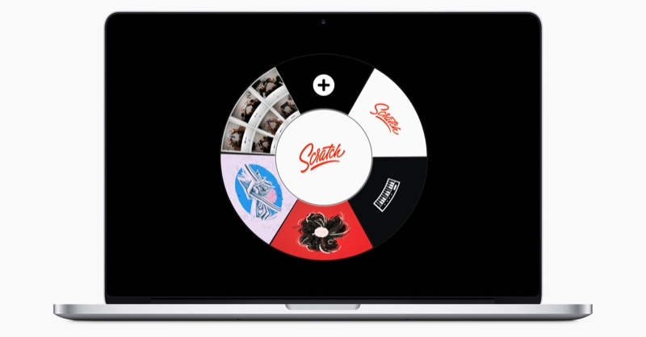
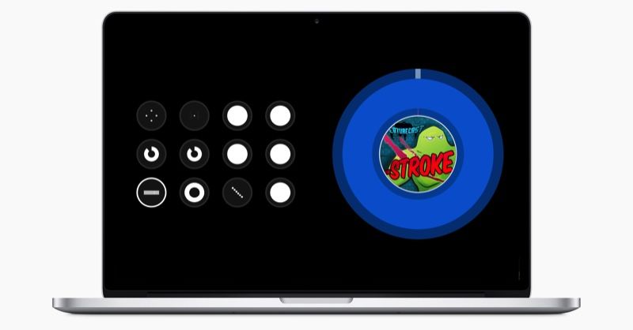
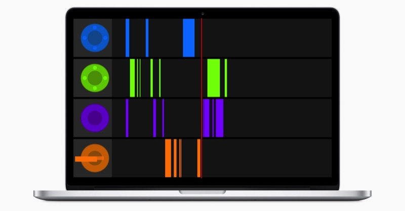

Menu
Home
Temp
About
Work
Contact
Air FX
3 dimensional wireless control of your music



Read more about the project
Swoosh 2
Hand tracking performance
Read more about the project
Swoosh
You music library in your own hands
Read more about the project
Liquids
Liquid Drawing
Read more about the project
Game Pack
All your favorite retro games, reinvented
Read more about the project
JAM 2
Video plugin for Ableton Live
Read more about the project
Image FX
Instagram on juice
Read more about the project
Slide Show Plus
Present you images in style
Read more about the project